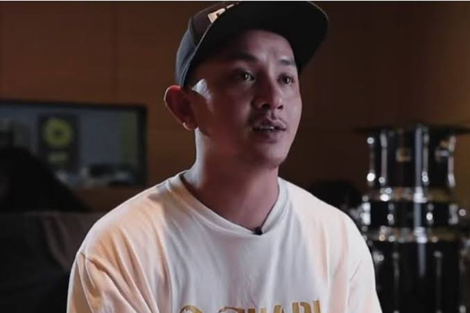

Tuan Tigabelas berdiri di garis depan skena hip-hop Indonesia dengan menyuarakan keresahan alam dan realitas sosial melalui rima yang tajam. Di atas ketukan boom-bap yang menghentak dan sarat energi era 90-an, ia meracik gaya musik yang tidak sekadar mengajak pendengar untuk berdansa, tetapi juga menggugah kesadaran kritis terhadap isu lingkungan dan kemanusiaan. Setiap bait yang dilantunkannya mengalir seperti manifesto sunyi, menyatukan kebrutalan lirik jalanan dengan kepekaan nurani yang mendalam.
Bagi generasi Z yang hidup di tengah pusaran informasi dan kecemasan ekologis, karya-karya Tuan Tigabelas hadir sebagai suar kejujuran yang relevan. Mereka menemukan ruang pelarian sekaligus tempat bertumpu untuk menyuarakan protes dan harapan di dalam lagu-lagunya yang jujur tanpa pernis. Musiknya merangkul jiwa-jiwa muda yang mendambakan otentisitas, mengubah setiap panggung pertunjukan menjadi altar penyadaran kolektif yang intim dan membakar semangat.
2.5M
Spotify Followers
1.8M
Monthly Listeners
3
Official Albums